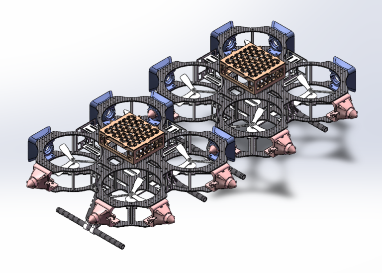
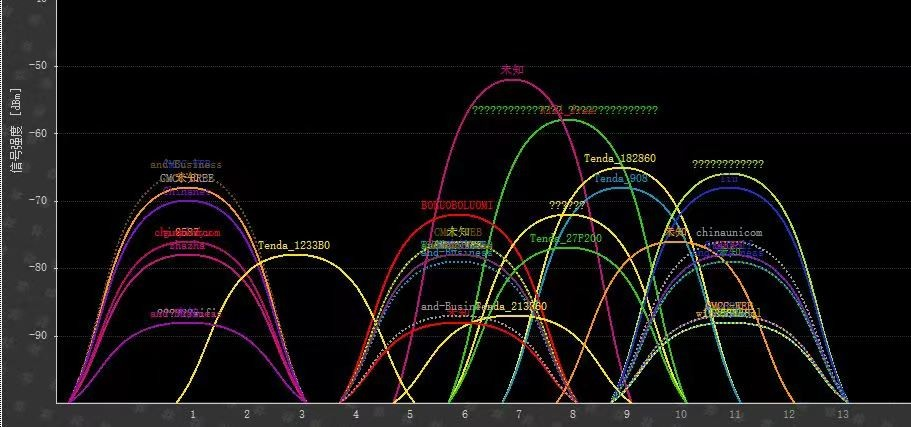

XLAB: A rising star from SJTU
无人机
智能通信

可组合可分离式无人机
可组合可分离式无人系统，是两种或多种无人系统，通过高精度的定位技术来完成自主组合、分拆，并可实现组合自定义形式的任务的无人系统。通过多种组合形式，可以实现资源的调配、协作、优化等功能；从而实现任务的空间与时间接力，推动无人系统在空间与时间维度上的任务执行能力。可实现平台的尺寸小型化、功能模块化、生物性标志性化、资源可再生化。
Learn more

智能通信
智能通信系统，包括通信系统、干扰源识别分析系统等，面向动态环境中的社会需求，通过在通信中节点处布设基站并搭建移动系统，深度挖掘通信的大数据，分析通信资源使用情况，调度系统，优化干扰问题，异构通信网络，且在网页中展示，便于浏览。
Learn more